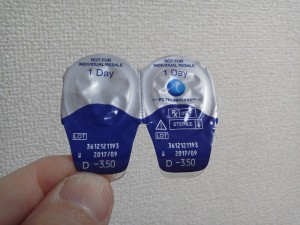
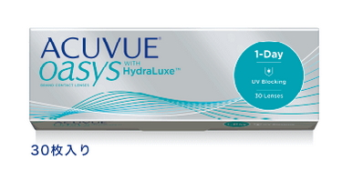
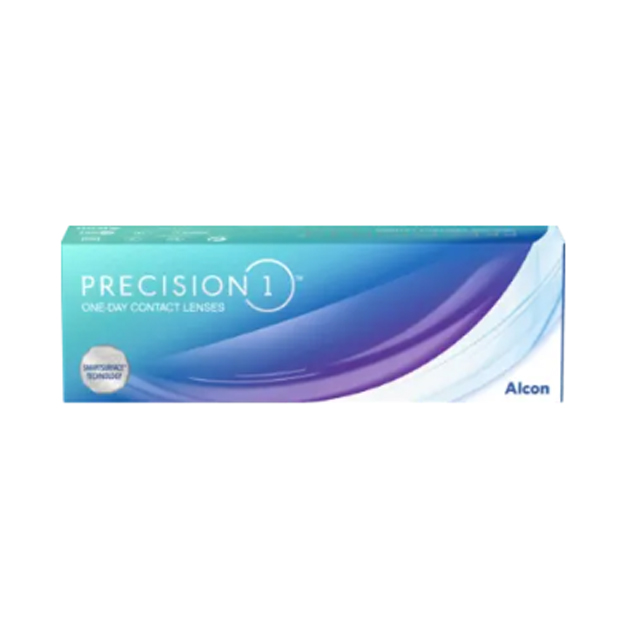

本日の総合最安値情報 更新日: {{UPDATED_TEXT}}
プロクリアワンデー処方箋不要あり処方箋必要（楽天/Yahoo）
プロクリアワンデーは、処方箋がなくても購入できる専門店と、処方箋の提出が必要な楽天市場・Yahoo!ショッピングの両方で取り扱いがあります。当サイトでは処方箋不要の専門店を中心に、価格を比較しやすいようランキング形式でまとめています。
処方箋をお持ちでない方は、下の「処方箋不要」ランキングから選ぶのがおすすめです。既に処方箋をお持ちの方は、「処方箋必要（楽天/Yahoo）」ランキングも合わせてチェックすると、より安い選択肢が見つかる場合があります。
プロクリアワンデー マルチフォーカル（遠近両用）処方箋不要あり処方箋必要（楽天/Yahoo）
マルチフォーカル（遠近両用）も、標準品と同様に処方箋不要の専門店と処方箋必要な楽天/Yahooの両方で比較できます。遠近両用は取り扱い店舗数が少ない傾向があるため、処方箋不要側の在庫状況もあわせてご確認ください。
プロクリアワンデーについて
メーカー：クーパービジョン
使用日数：1日（ワンデー）
含水率：60%
素材：オマフィルコン A（PCハイドロゲル）



プロクリアワンデーの特徴は主に3つです。
◎レンズの潤いが、しっかりとキープされます。レンズに含まれる水分の減少が少ないので、レンズが変なふうに変化することも少なく、潤いが保たれます。
◎レンズの清潔感が保たれます。レンズ表面に汚れや細菌といった物質を極力おさえ、瞳の健康にもやさしいレンズです。
◎乾燥を抑えてくれる新素材『PCハイドロゲル』を採用。瞳の角膜細胞を基に開発された素材で、保水成分MPCの調合により乾燥感から解放してくれます。
プロクリアワンデーが採用する「PCハイドロゲル」は、生体の細胞膜構造を模した設計になっており、レンズ表面が水分子を強く抱え込む性質を持っています。装着直後だけでなく、装用後半日が経過してもレンズの水分保持率が高いというデータが報告されており、長時間のパソコン作業やエアコンの効いたオフィスなど、乾燥しやすい環境で過ごす方から特に支持されています。
また、レンズ表面にタンパク質や脂質などの汚れが付着しにくい特性もあるため、装用時間が長くなってもクリアな視界を保ちやすいのも特長です。初めてワンデータイプに挑戦する方や、これまで他のレンズで乾燥・かすみを感じていた方にとって、乗り換え候補として検討する価値のあるレンズと言えます。
度数展開の幅が広く、乱視用・遠近両用（マルチフォーカル）ともにラインナップされているため、家族で同じシリーズをまとめて使いたいという方にも選ばれています。
プロクリアワンデーとワンデーアキュビューオアシスとの比較


ワンデーアキュビューオアシスは、アキュビューシリーズの中でも新しい「オアシス」テクノロジーを搭載し、独自の保湿成分HydraluxeとPUSH技術と呼ばれる薄型設計を特徴とするレンズです。
- 乾燥感
どちらも乾燥に配慮した設計ですが、アプローチが異なります。プロクリアワンデーはレンズ素材自体に水分を抱え込む力があるのに対し、オアシスは装着感の柔らかさで乾燥による違和感を軽減するタイプです。長時間装用ではプロクリアワンデーの方が水分キープ力を感じやすいという声が多い一方、装着直後のなじみやすさはオアシスに軍配が上がる傾向があります。
- 装着のしやすさ
オアシスは非常に薄く柔らかい設計のため、レンズが反り返りやすくコンタクトレンズ初心者にはやや扱いにくいと感じる場合があります。プロクリアワンデーは適度なコシがあり、裏表の判別がしやすい点も含めて扱いやすいという声が多いです。
- 値段
オアシスは比較的高価格帯のレンズであり、通販最安値で比較してもプロクリアワンデーの方が安く購入できるケースが多くなっています。
プロクリアワンデーとデイリーズトータルワンとの比較

デイリーズトータルワンは「生レンズ」「生感覚レンズ」というキャッチコピーで知られる人気シリーズで、中心部と表面で異なる素材特性を持つ独自構造（水分傾斜型設計）を採用しています。
- 乾燥感
デイリーズトータルワンはレンズ表面がほぼ水の膜で覆われるような感覚を実現しており、装用感の軽さでは高評価です。一方、プロクリアワンデーは水分保持力の持続性を重視した設計で、装用後半日〜1日を通じたうるおいキープの安定感が特長です。目的（一瞬のなめらかさか、長時間の安定感か）によって選び方が変わります。
- 装着のしやすさ
どちらも装着しやすい部類のレンズですが、デイリーズトータルワンは非常に薄く柔らかいため、扱いに多少慣れが必要という声もあります。
- 値段
デイリーズトータルワンは高機能素材を採用している分、価格帯はやや高めです。通販最安値で比較すると、プロクリアワンデーの方がコストを抑えやすい傾向にあります。
プロクリアワンデーとプレシジョンワンとの比較

プレシジョンワンはアルコン社の比較的新しいワンデーレンズで、独自の「スマートサーフェス技術」により、レンズ表面に均一な水分の層を形成する設計が特徴です。
- 乾燥感
プレシジョンワンは表面のなめらかさによる装用感の良さに定評があります。プロクリアワンデーはレンズ内部の保水力で乾燥を抑えるアプローチのため、乾燥を感じやすい環境（エアコン下や長時間のデスクワークなど）ではプロクリアワンデーの持続力が安定していると感じる方が多いようです。
- 装着のしやすさ
どちらも装着感が良好で、コンタクトレンズに慣れていない方でも扱いやすいレンズです。大きな差は感じにくいという声が多くなっています。
- 値段
プレシジョンワンは比較的リーズナブルな価格帯で展開されており、価格面ではプロクリアワンデーと近い水準で購入できることが多いです。
他社ハイドロゲル系ワンデーレンズとの比較表
| 製品名 | プロクリアワンデー | ワンデーアキュビューオアシス | デイリーズトータルワン | プレシジョンワン |
|---|---|---|---|---|
| メーカー | クーパービジョン | ジョンソン・エンド・ジョンソン | アルコン | アルコン |
| 素材の考え方 | PCハイドロゲル（保水成分MPC配合） | シリコーンハイドロゲル（Hydraluxe） | 水分傾斜型設計（表面が水の膜） | スマートサーフェス技術 |
| 含水率 | 60% | 38% | コア33%／表面ほぼ100% | コア51%／表面80%以上 |
| 酸素透過率（Dk/t） | 22.8 | 約121 | 156 | 100 |
| 乾燥感の強み | 長時間のうるおい持続 | 装着直後のなじみやすさ | 装用直後のなめらかさ | 表面のなめらかさ |
| 装着のしやすさ | 適度なコシで扱いやすい | 薄く柔らかい（やや反りやすい） | 非常に薄い（慣れが必要な場合も） | 扱いやすい |
| 価格帯の傾向 | お手頃〜中価格帯 | やや高価格帯 | 高価格帯 | お手頃〜中価格帯 |
| 遠近両用ラインナップ | あり（マルチフォーカル） | なし | あり | あり |
※含水率・酸素透過率（Dk/t）は各メーカー公表値を基にした一般的な目安です。度数により数値が異なる場合があります。
※上記の比較は各製品の一般的な特徴・傾向をまとめたもので、装用感には個人差があります。
含水率・酸素透過率の見方
含水率：レンズにどれくらい水分が含まれているかを示す数値です。高いほど、装着直後のうるおい感やなめらかさを感じやすくなりますが、周囲の乾燥した空気に水分を奪われやすく、時間の経過とともに乾燥を感じやすくなる場合があります。低いほど、水分の変化が少なく安定した装用感を保ちやすい一方、装着直後のなじみやすさはやや控えめになる傾向があります。
酸素透過率（Dk/t）：レンズがどれだけ酸素を通しやすいかを示す数値です。高いほど、角膜に届く酸素の量が多くなり、目の充血や酸素不足によるトラブルのリスクを抑えやすいとされています。低いほど、酸素の通りにくさから長時間装用時に目の疲れを感じやすくなる場合があります。一般的に70〜100を超えると、数値差による体感的な違いは少なくなるといわれています。
※価格は変動します。最新価格は各販売サイトでご確認ください。
当サイトは広告を利用しています。